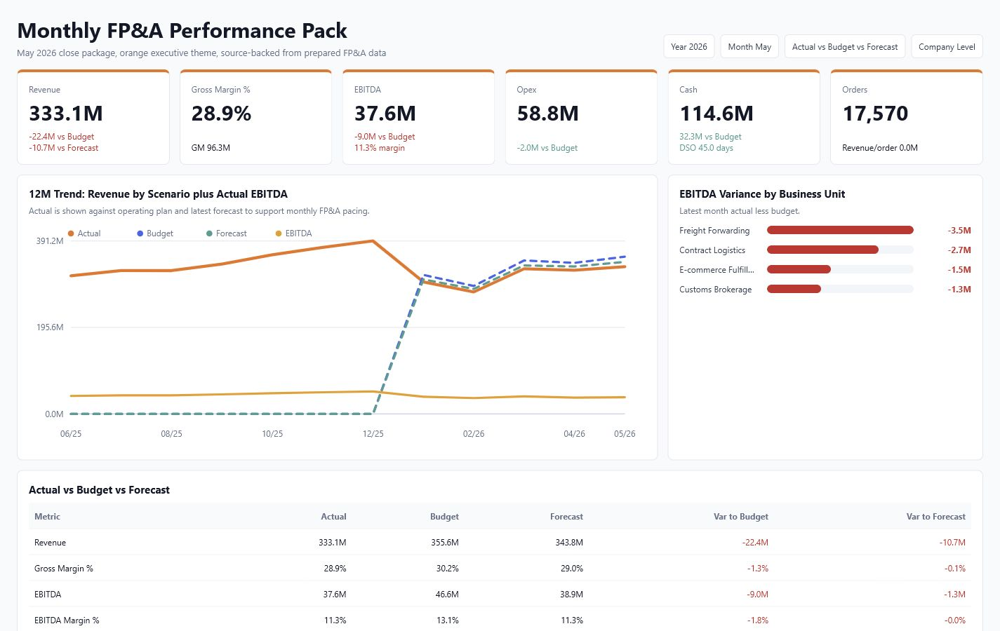
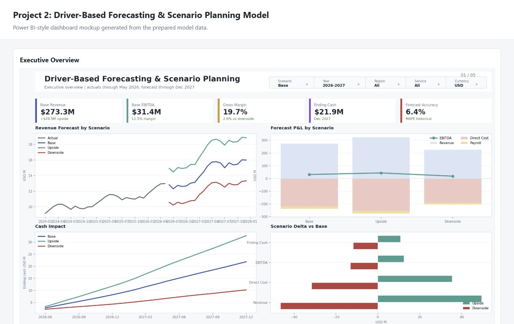

Strong match for modern FP&A
Best fit: commercial FP&A, regional finance, finance BI, and business-partner roles that need budget ownership, reporting discipline, and better workflow.
Start review pathWelcome
FP&A Analyst
Nice to meet you. I build financial insight that leaders can trust.
Modern FP&A Portfolio
I combine finance fundamentals, Power BI, SQL, Python, and AI-assisted workflow thinking to build budget, forecast, variance, and cash insights leaders can actually use.
30-second fit
Based in Ho Chi Minh City and open to Vietnam-based, regional MNC, and international finance roles with relocation for the right opportunity. Best signal: trusted finance judgment, energetic ownership, and technical delivery that makes the team faster.
Best fit: commercial FP&A, regional finance, finance BI, and business-partner roles that need budget ownership, reporting discipline, and better workflow.
Start review pathPersonal brand
My style is not flashy for attention. I build trust through clear logic, clean follow-through, and a positive working rhythm that helps finance, sales, operations, and leadership move in the same direction.
The portfolio is designed to show a modern FP&A profile: finance fundamentals, business communication, Power BI, Python automation, and AI-aware process improvement.
Protect assumptions, sources, checks, and decision logic so leaders can rely on the output.
Bring momentum to messy reporting cycles without sacrificing finance discipline or review quality.
Use interviews, stakeholder follow-up, and plain language so analysis becomes action, not just files.
Improve recurring processes with Power BI, Python, SQL, and AI-assisted thinking where it adds control.
Start with the management decision: target gap, margin risk, cash pressure, or workflow friction.
FP&A capability map
Builds budgets and driver-based forecasts from branch, service, volume, headcount, and market assumptions.
Explains revenue, gross margin, SG&A, EBITDA, customer, and salesperson variance with owners and actions.
Finds margin, pricing, resource-load, and service-level issues so leaders can reprice or reset priorities.
Connects credit exposure, overdue AR, DSO pressure, and collection follow-up to working-capital decisions.
Builds close packs and Power BI dashboards that make performance, risk, and next steps easy to scan.
Turns recurring Excel and CSV reporting into repeatable Python workflows with visible validation checks.
Looks for practical AI-assisted steps in documentation, review notes, variance narration, and workflow QA.
Where to start
Start with the 30-second fit and CV to confirm commercial FP&A, finance BI, or regional finance match.
Open CVRead one executive case to see how I move from business problem to analysis, recommendation, and action.
Read casesOpen the Power BI previews to see forecast, variance, cash, and management reporting logic.
See BI proofInspect the automation hub if the role needs finance workflows that are repeatable and auditable.
Inspect automationFor FP&A / finance business partner roles
Shows how I frame issues, quantify drivers, protect confidentiality, and convert analysis into management action.
For finance BI / management reporting roles
Shows dashboard thinking, semantic modeling, DAX, forecast views, variance bridges, and finance QA discipline.
For finance automation roles
Shows how I make repeated reporting work faster without turning finance control into a black box.
Recruiters can open the CV in-browser first, then download the PDF with a clean filename.
FP&A, budgeting, forecasting, variance analysis, Power BI, SQL, Python, and working capital.
Public summaries focus on context, analysis, management action, and measurable scale.
Executive FP&A decision support
What business issue mattered: revenue, margin, cash, capacity, or sales discipline.
Which drivers were tested: customer mix, service line, branch, salesperson, cost, or AR exposure.
What action management could take: reprice, collect, rebalance, coach, or redesign reporting cadence.
Why it mattered for leaders: clearer trade-offs, faster review, and less manual finance friction.
CFO / BOD support
Interviewed 11 departments and 3 satellite offices, then combined findings with a 3-year operating dataset to support CFO-validated recommendations for branch improvement.
Customer economics
Identified customers whose margin contribution did not justify operational load, helping management prioritize repricing, service-level resets, and capacity relief.
Sales governance
Built salesperson-level review views so branch leaders can identify coaching needs, rebalance targets, and act on underperformance before it becomes structural.
Cash and AR control
Reviewed customer credit exposure so finance, sales, and office leadership could align on credit caps, collection follow-up, and working-capital protection.
Public-safe summaries intentionally exclude customer names, salesperson names, raw comments, workbook screenshots, and detailed financial values. Each case follows a recruiter-friendly pattern: problem, analysis, recommendation, decision value, and result signal.
Power BI proof

Management reporting
Executive close pack for Actual vs Budget vs Forecast, Revenue, Gross Margin, EBITDA, Opex, Cash, variance bridge, and drilldowns by BU, product, customer, department, and region.

Planning product
Planning model for FP&A leaders to compare Base, Upside, and Downside scenarios across revenue, direct cost, headcount, cash impact, and forecast accuracy.
Python automation proof
Monthly FP&A reporting pipeline
Consolidates monthly inputs, maps area, customer, service, and salesman dimensions, calculates actual-vs-target ratios, and produces a written management brief for review.
Read controlled monthly files and required columns.
Check missing fields, mappings, and duplicate keys.
Aggregate revenue, GP, customer, area, and service views.
Calculate actual vs target, last month, and last year.
Generate a review-ready written finance narrative.
Public-safe code proof
The linked hub includes runnable scripts, README notes, and synthetic CSV inputs that demonstrate pandas transformations, validation checks, actual-vs-plan logic, and stakeholder file splitting.
Experience and skill stack
Contact
Based in Ho Chi Minh City, Vietnam. Open to Vietnam-based, regional MNC, and international finance roles where commercial judgment, reporting discipline, and automation can help leaders move faster.